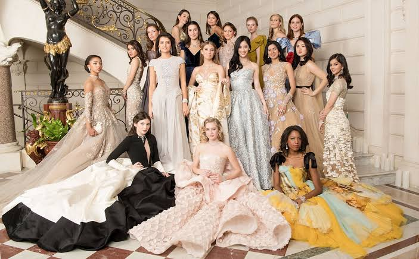
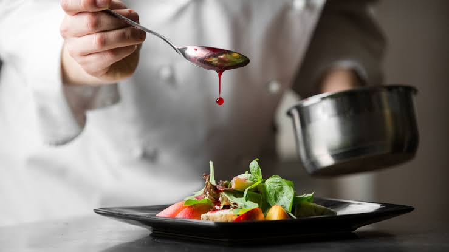

<!DOCTYPE html>
<html lang="pt-br">
<head>
    <meta charset="UTF-8">
    <meta name="viewport" content="width=device-width, initial-scale=1.0">
    <title>StandFang - Início</title>
    <link rel="stylesheet" href="Styles.css">
</head>
<body>
    <!-- Cabeçalho -->
    <!-- Conteúdo permanece igual -->
</body>
</html>
    <header>
        <div class="header-left">
            
            <h1>StandFang</h1>
        </div>
        <nav>
            <ul class="menu">
                <li><a href="index.html"><b>Início</b></a></li>
                <li><a href="about.html"><b>Sobre</b></a></li>
                <li><a href="projects.html"><b>Projetos</b></a></li>
            </ul>
        </nav>
    </header>

    <!-- Conteúdo Principal -->
    <main>
        <section class="projects">
            <h2>Projetos</h2>

            <div class="project-item">
                
                <h3>Baile de Debutantes</h3>
                <p>O baile de debutante é um evento tradicional, que marca a entrada de uma jovem na fase adulta, celebrando sua maturidade e a transição para a vida social. Em nosso projeto, trabalhamos para tornar este momento inesquecível.</p>
            </div>

            <div class="project-item">
                
                <h3>Oficina Gastronômica</h3>
                <p>Oferecemos uma oficina gastronômica onde os participantes aprendem técnicas culinárias, preparando pratos deliciosos em um ambiente divertido e educativo. Um evento que mistura aprendizado e sabor!</p>
            </div>
        </section>
    </main>

    <!-- Rodapé -->
    <footer>
        <p>&copy; 2024 StandFang | Todos os direitos reservados.</p>
    </footer>
</body>
</html>